Mis hobbies
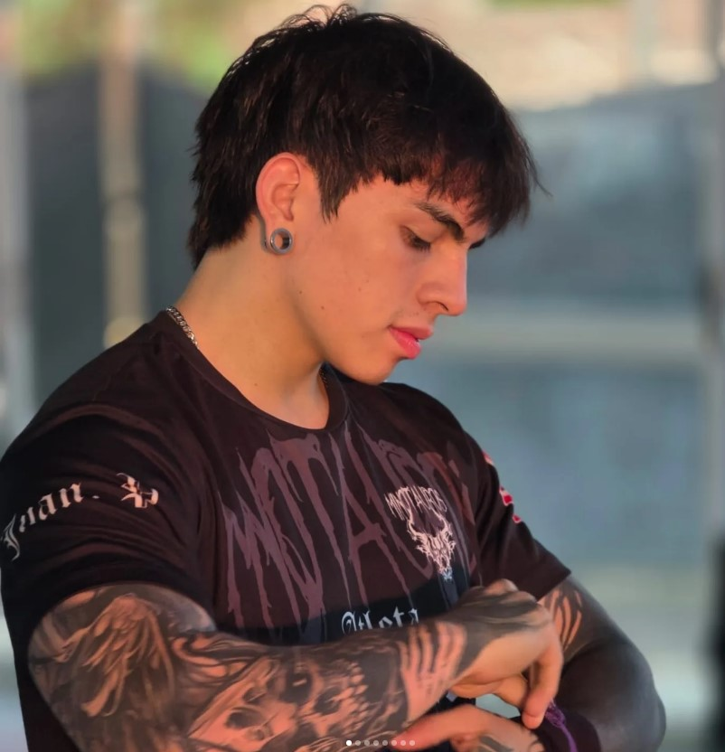
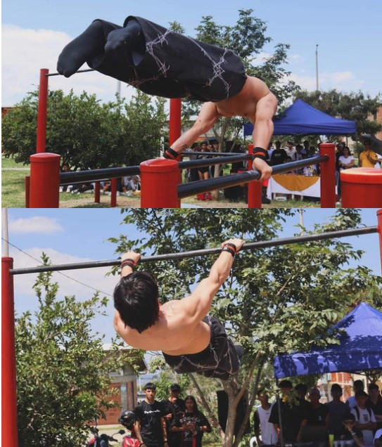
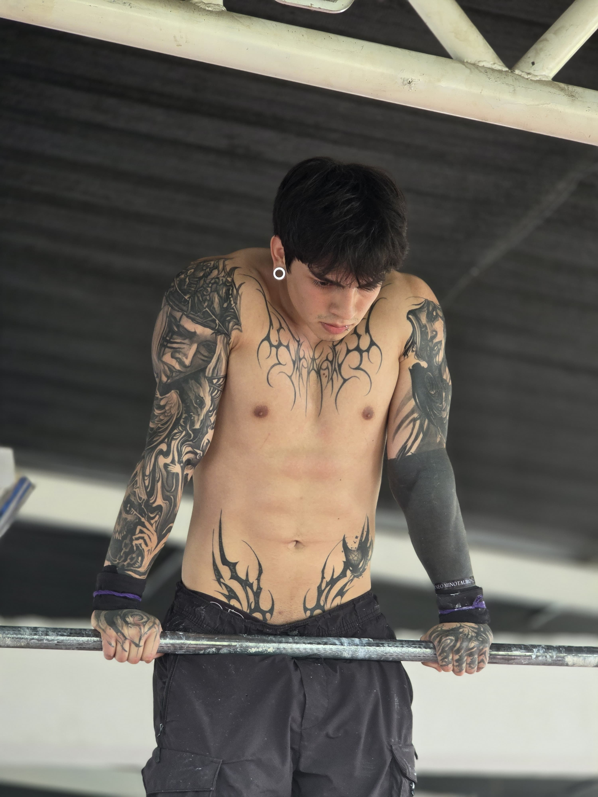
Soy un atleta de nivel avanzado en calistenia. A través de esta disciplina, he desarrollado diversas actitudes y aptitudes que han contribuido positivamente a mi crecimiento tanto personal como deportivo. Me especializo principalmente en la rama de movimientos estáticos y en street lifting, áreas en las que he encontrado un lugar propio y seguro.
Soy un apasionado de los videojuegos y la cultura geek. Desde muy pequeño he estado vinculado al mundo del gaming y el anime, lo que ha influido en mis gustos e intereses. Disfruto de todo tipo de géneros, aunque tengo una mayor preferencia por los juegos single player y los títulos independientes. Actualmente, mi anime favorito es One Piece.

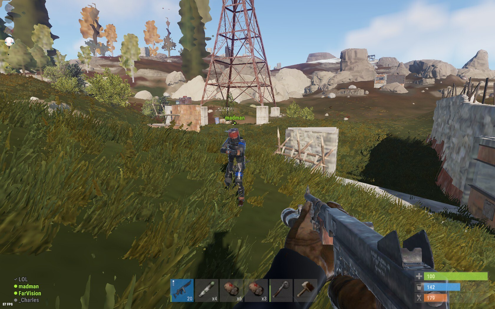
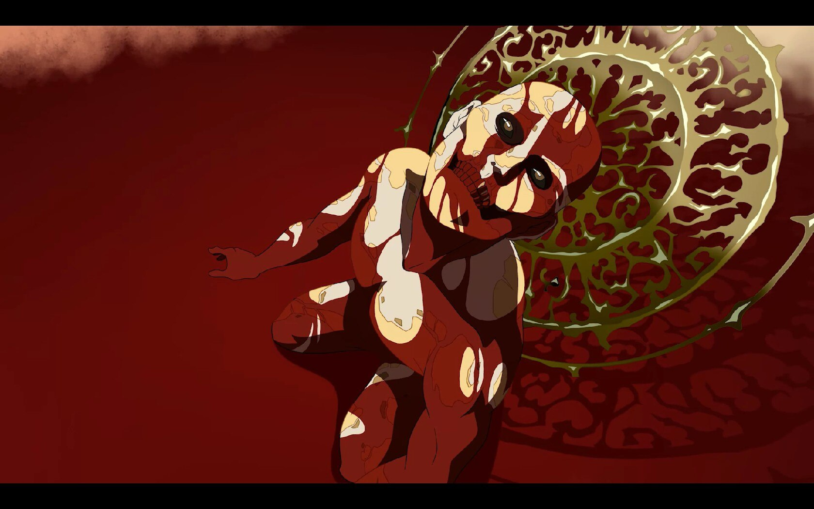
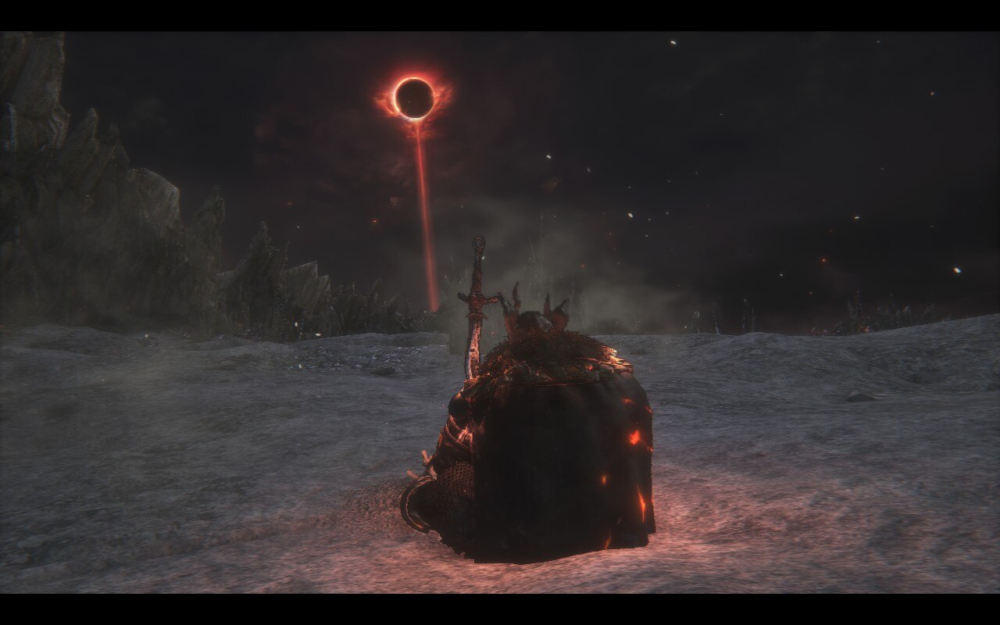
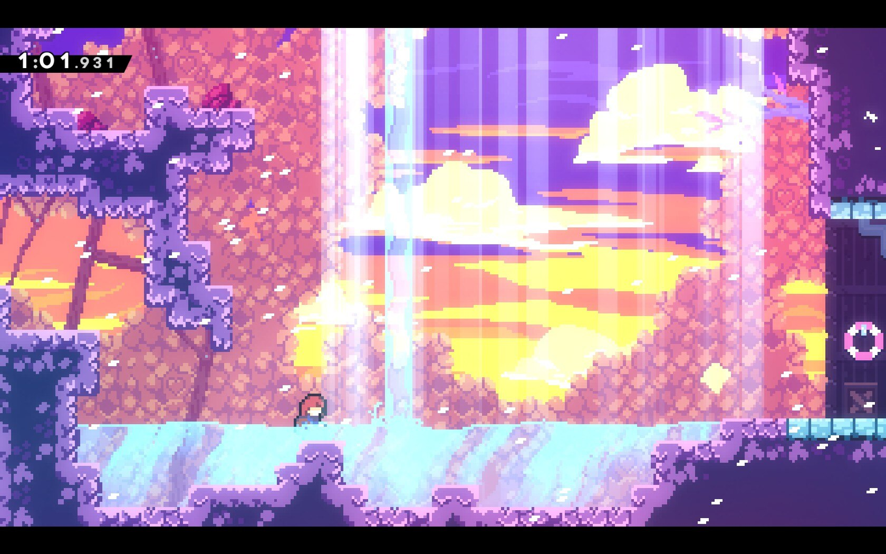
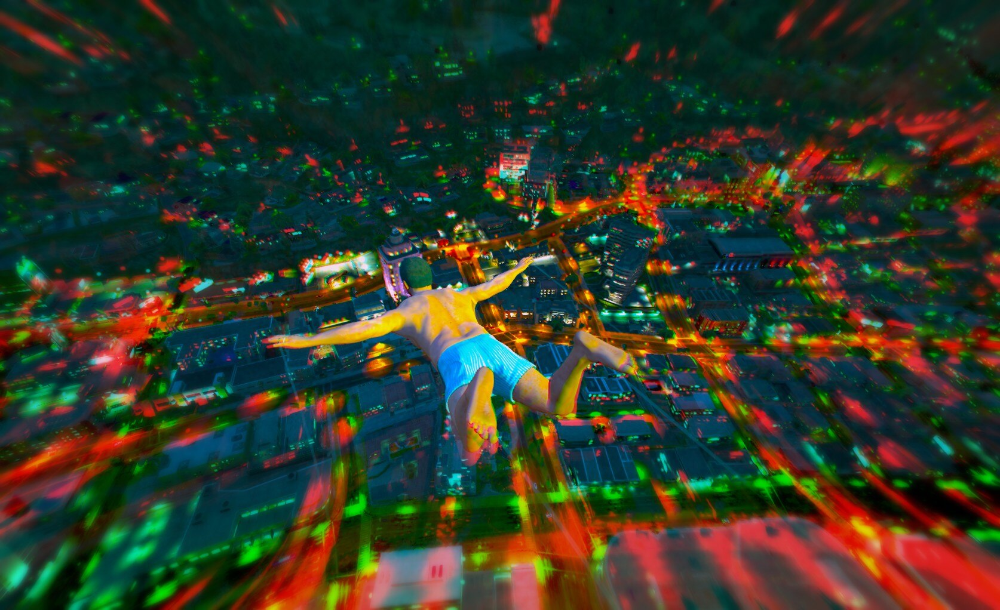
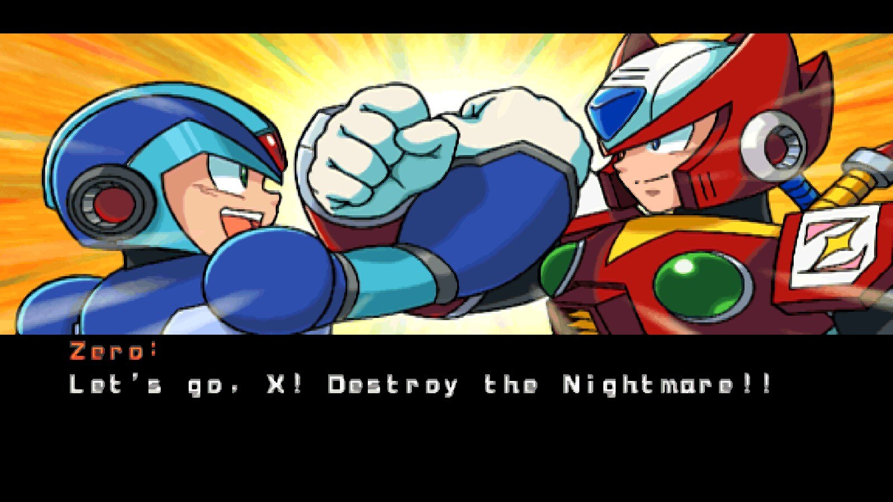
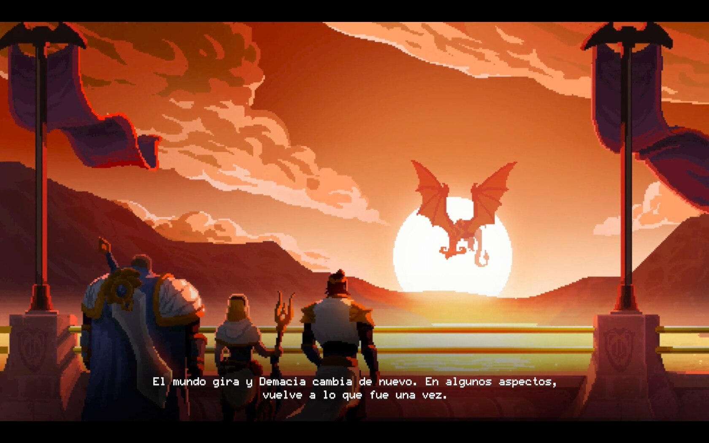
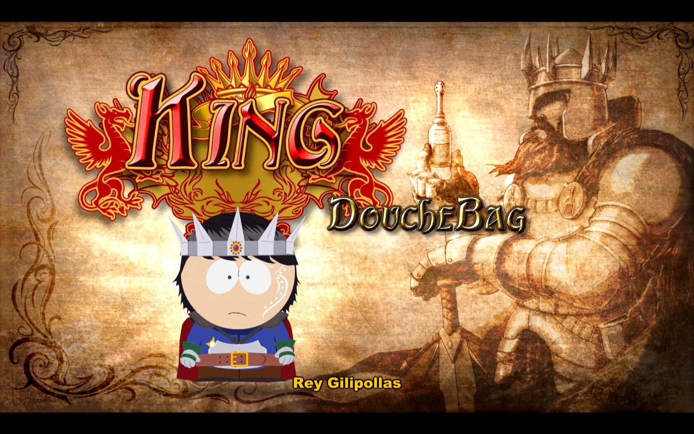
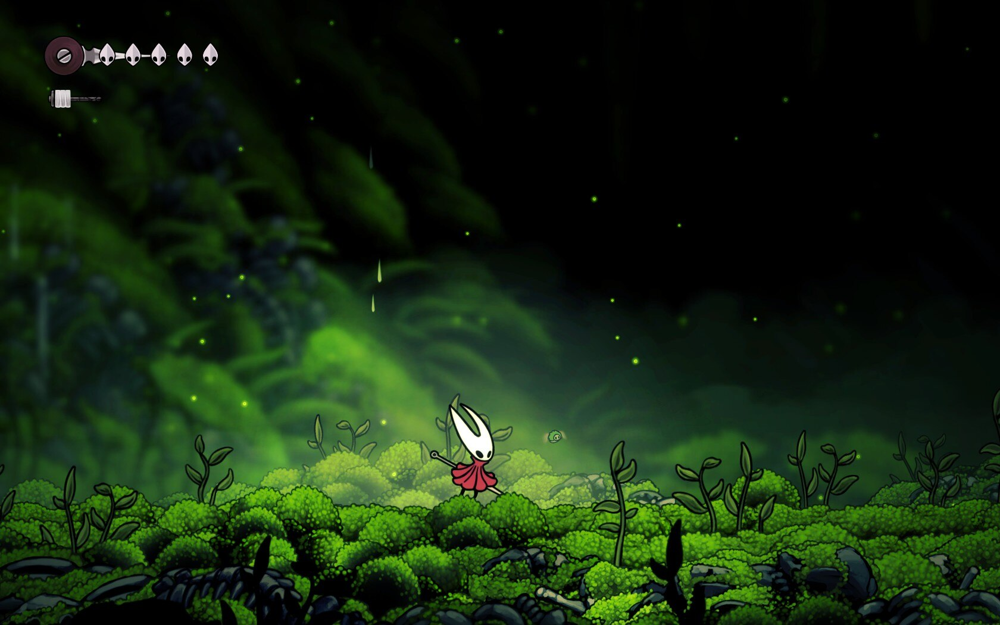
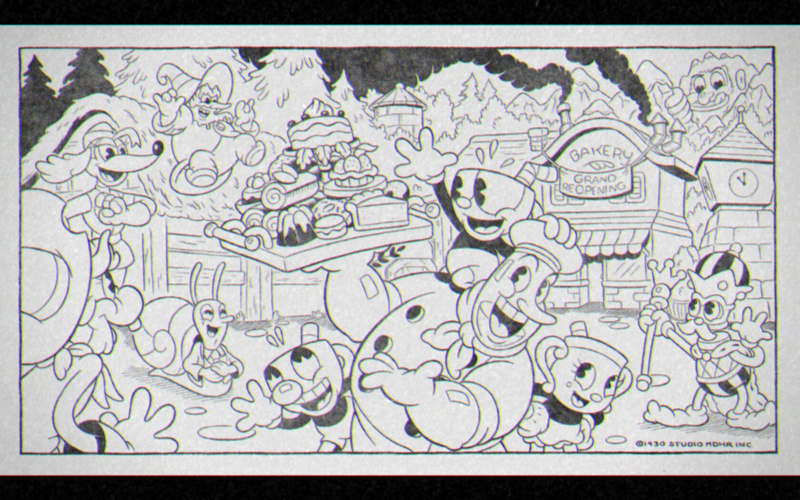
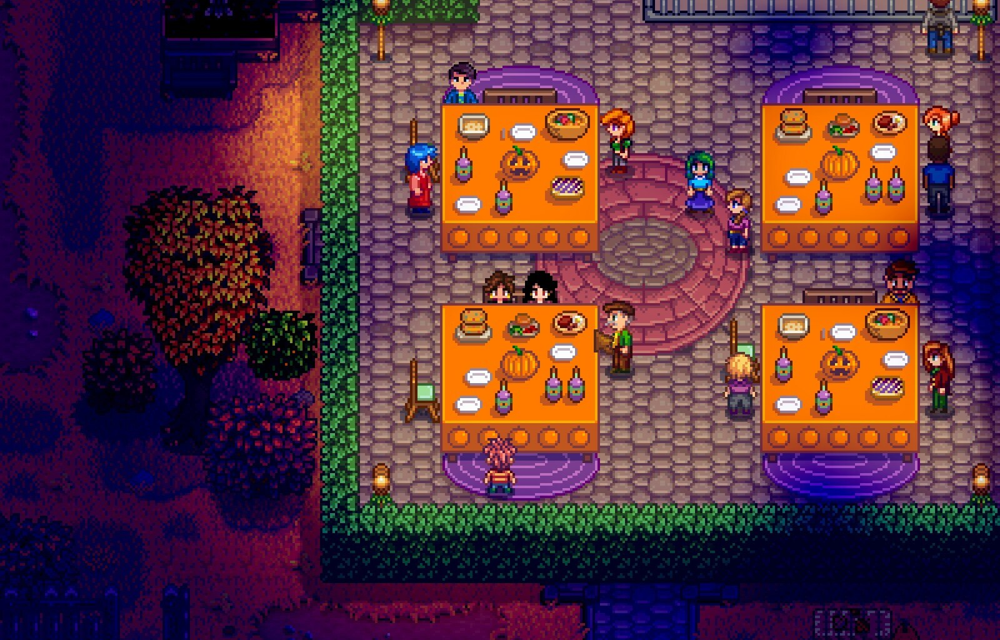
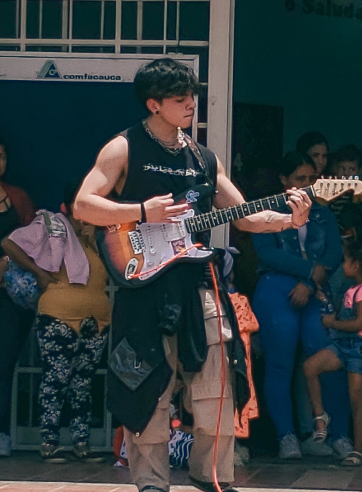
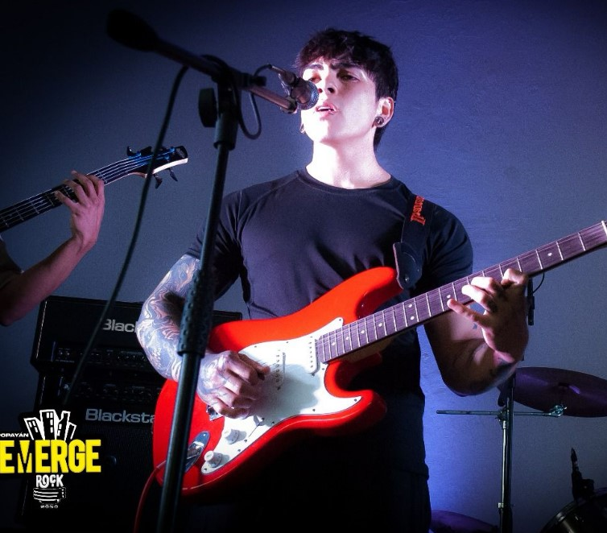
Me apasiona la música y tocar guitarra. En mi tiempo libre, suelo reunirme con mis amigos para interpretar canciones o aprender nuevas piezas que nos gustan.
He tenido la oportunidad de participar en diferentes eventos, principalmente tocando géneros como indie y rock en español.
Aunque disfruto de una gran variedad de estilos musicales, mis géneros favoritos son el screamo, el rap colombiano y el rock progresivo.